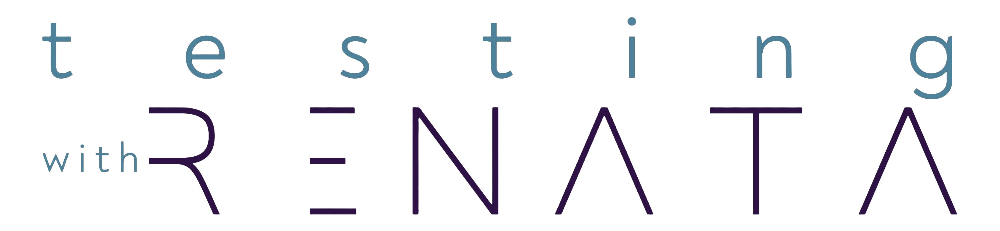

01 / 15

AI PARTY Workshop
AI PARTY
Hands-on com IA
Playwright MCP/CLI/Agents · Cursor · Claude Code · Ferramentas de produtividade
Duracao
3 horas
Formato
Misto + demo
Foco
Pratica real
ai-party.ptbr

02 / 15
Agenda da Aula
Roteiro de 180 minutos
00:00
Abertura + The 4Ds
Delegation, Description, Discernment, Diligence
00:15
Assistentes + Context Management
tokens, /compact, /clear, foco da conversa
00:30
MCP
base conceitual e arquitetura
00:40
Playwright MCP [DEEP]
configuracao, uso e demo guiada
01:05
Playwright CLI [DEEP]
fluxo completo de execucao e debug
01:30
Playwright Agents [DEEP]
workflow agentico e narracao
01:45
Cursor Deep Dive [DEEP]
Rules, Skills e padroes de time
02:10
Claude Code
quando usar, comparativo pratico
02:20
Panorama de ferramentas
Codex, Copilot, VSCode, Grafana, Jira, GitHub
02:35
Q&A + Encerramento
duvidas, recap e proximos passos
03 / 15
Bloco 00 · 15 min
The 4Ds como base da aula
Framework de fluencia em IA
- Delegation: o que delegar para IA
- Description: como pedir com clareza
- Discernment: como avaliar saidas
- Diligence: responsabilidade e transparencia
Conexao com o workshop
- Delegation -> Agents e automacoes
- Description -> prompts, rules e skills
- Discernment -> QA e revisao critica
- Diligence -> seguranca e accountability
Pergunta: Qual dos 4Ds e mais dificil no seu contexto hoje?
04 / 15
Bloco 01 · 15 min
Assistentes e Context Management
Modelo mental
- Voce dirige, IA executa e propõe
- Contexto relevante = melhor resposta
- Conversa longa sem controle = ruído
Comandos praticos
/compactpara preservar aprendizado essencial/clearpara trocar de tarefa sem poluicao- Use tokens como recurso finito de foco
Regra pratica: mude de assunto? limpe o contexto.
05 / 15
Bloco 02 · 10 min
MCP: o protocolo de conexao
O que e MCP
- Padrao para IA conversar com ferramentas
- Conecta modelo a recursos externos
- Permite automacao com contexto real
Usuario -> Assistente -> MCP Server -> Ferramenta
<- Resposta com contexto real
Sem MCP:
- Modelo responde so com contexto atual
Com MCP:
- Modelo acessa dados/ferramentas
- Fluxo fica mais acionavel
06 / 15
Recap divertido
MCP vs CLI vs Agents: quem é quem?
🎮
Playwright MCP
O controle remoto da IA
- IA pilota o navegador ao vivo
- Snapshot → ação → snapshot
- Ótimo para explorar e investigar
"Clica ali pra mim, por favor"
⚡
Playwright CLI
A bancada do mecânico
- Você roda, debuga, analisa trace
- Determinístico e reprodutível
- Base do dia a dia de QA
npx playwright test --headed
🤖
Playwright Agents
O estagiário autônomo
- Recebe objetivo e executa sozinho
- Planeja, tenta, valida, repete
- Brilha em fluxos repetitivos
"Garante que o checkout funciona"
Resumão: MCP é mãos, CLI é músculo, Agents é cérebro. Os três juntos = time completo.
07 / 15
Bloco 03 · 25 min [DEEP]
Playwright MCP na pratica
Fluxo de uso recomendado
- Definir objetivo de teste
- Capturar estado com snapshot
- Executar acao focada
- Validar resultado antes de seguir
Onde traz mais valor
- Smoke guiado por IA
- Investigacao de bug visual/fluxo
- Reproducao rapida de cenarios
Checklist da demo: 1) Abrir pagina alvo 2) Snapshot da estrutura 3) Escolher ref correta 4) Interagir (click/fill) 5) Snapshot de validacao 6) Registrar evidencias Nao faca: - repetir a mesma acao sem nova evidencia - pular etapa de verificacao
08 / 15
Bloco 04 · 25 min [DEEP]
Playwright CLI: fluxo completo
Narrativa da sessao CLI
- Setup inicial e estrutura minima
- Execucao por arquivo e por teste
- Falha controlada para diagnostico
- Report e trace para root cause
- Reexecucao apos ajuste
# Exemplo de fluxo de demo npx playwright test npx playwright test tests/login.spec.ts npx playwright test -g "checkout feliz" npx playwright test --headed npx playwright show-report npx playwright show-trace trace.zip Meta: mostrar produtividade de ponta a ponta
Mensagem-chave: dominar CLI acelera debug mais do que qualquer "truque isolado".
09 / 15
Bloco 05 · 15 min [DEEP]
Playwright Agents
Quando usar agente
- Tarefa com objetivo claro e verificavel
- Fluxos repetitivos com passos conhecidos
- Exploracao guiada para descobrir comportamento
Boas praticas de prompt agentico
- Defina sucesso e restricoes
- Peça evidencias a cada etapa
- Interrompa apos tentativa sem progresso
Cuidado: agente sem criterio de sucesso gera trabalho sem direcao.
10 / 15
Bloco 06 · 25 min [DEEP]
Cursor Deep Dive
Cursor Rules
- Padronizam comportamento do assistente
- Reduzem retrabalho entre pessoas do time
- Garantem consistencia de output
Cursor Skills
- Reuso de playbooks recorrentes
- Acelera tarefas operacionais de alto volume
- Facilita onboarding de novos membros
Comparacao da demo: Sem rule: - resposta inconsistente - formato variavel Com rule + skill: - saida previsivel - qualidade mais estavel - tempo menor de revisao
11 / 15
Bloco 07 · 10 min
Claude Code no fluxo de trabalho
Onde brilha
- Refatoracao orientada por objetivo
- Leitura/explicacao de base legada
- Primeiro rascunho de implementacao
Comparativo pratico com Cursor
- Escolha por contexto da tarefa
- Nao existe "ferramenta unica perfeita"
- Combinacao das duas costuma render melhor
12 / 15
Bloco 08 · 15 min
Panorama de outras ferramentas
AI coding
- Codex
- GitHub Copilot
- Opus High
IDE/ecossistema
- VSCode
- Cursor
- Integrações MCP
Fluxo de equipe
- GitHub (codigo e PR)
- Jira (planejamento)
- Grafana (observabilidade)
Ponto principal: stack combinada por objetivo, nao por moda.
13 / 15
Blueprint
Stack minima recomendada
Camada 1 (edicao e assistencia) - Cursor + Rules + Skills Camada 2 (web testing e diagnostico) - Playwright CLI + Playwright MCP + Trace/Report Camada 3 (gestao e colaboracao) - GitHub + Jira + observabilidade (Grafana) Camada 4 (governanca) - boas praticas de prompt - revisao humana - seguranca e diligencia
Sem governanca: velocidade sobe, mas qualidade cai.
14 / 15
🙋
Q&A · 15 min
Perguntas e Respostas
Traz seu caso real e vamos mapear juntos o melhor fluxo.
Delegar melhor
Automatizar com criterio
15 / 15
Obrigado pela participacao!
AI PARTY concluida
Proximo passo: praticar com projeto real e iterar com os 4Ds.
Material
ebook aluno + ebook instrutora
Pratica
Playwright MCP + CLI + Agents
Escala de time
Cursor Rules + Skills